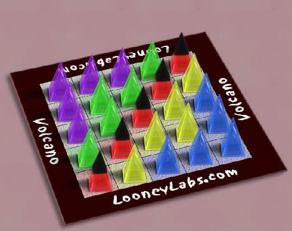

Volcano
Volcano est un astucieux jeu tactique publié par Looney Labs. Il se joue avec les Pyramides
Treehouse . Les pièces noires sont des "capuchons de
volcan" qui, lorsqu'ils sont déplacés, peuvent provoquer
des "éruptions" du volcan dans la direction de ce
déplacement. Les but du jeu est de récolter des
pièces des 5 couleurs, au moment où votre score est
supérieur à celui de votre adversaire. Les règlessont ici.
Volcano peut se pratiquer à plus de 2 joueurs, mais cette
limitation s'applique au jeu implémenté sur
Boardspace. Il est conseillé aux débutants de
partir de la position standard. Les joueurs expérimentés
pourront utiliser une position initiale aléatoire
Robots: si les
robots ont une bonne tactique à court terme, ils sont incapables
de planifier une longue suite de coups ... ce qu'un joueur même
moyen parviendra à réaliser.
|

|